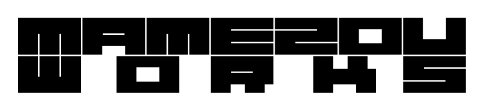
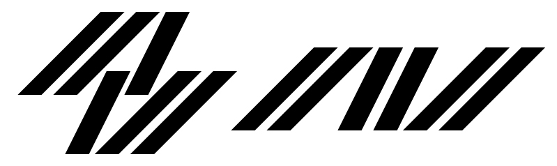
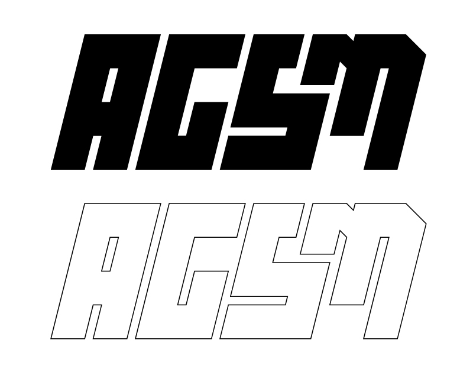

ロゴ作字#1 カスタムカーショップの屋号


Adobe Illustrator / 2016年 / 作業時間 6h (2案、ラフ作成含む)
近日開業予定のカスタムカーショップの屋号ロゴ案です（仮名称に基づくもの）。
ロゴ作字#2 スーパーモタードバイク愛好者グループ

Adobe Illustrator / 2016年 / 長期自主制作
バイク愛好者グループのロゴを制作しました。
「頑丈で速い」スーパーモタードの強さをイメージして、見た目にもインパクトを出せるよう太く重い文字を作字しました。
車名ロゴや用品メーカーロゴに混ぜ込んでも違和感が少ないようにすることと、ステッカー等にしたときも可読性を失わないように留意して制作しました。
ステッカーデザイン
Adobe Illustrator / 2017年 / 制作時間 3h
某企業のノベルティステッカー用として制作しました。
「業界関係者ならニヤリとする配色」にしつつ、「ジョークの一環なので出来るだけ派手でうるさいものにして欲しい」という要望に基づいてデザインを行いました。